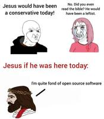

0


An anonymous reader quotes a report from Ars Technica: Just over a year ago, the Trump Administration issued an executive order meant to accelerate the development of nuclear power in the US. While an entire startup ecosystem has developed around the use of different -- and typically smaller -- reactor designs, only one of them has been fully licensed so far, and there are no plans to actually build any instances of that design.
The executive order directed the Department of Energy to have three different reactor designs reach criticality in a bit over a year. On Thursday, a startup called Antares announced that a test reactor it had placed at the Idaho National Laboratory had reached criticality, making it the first new design to cross this threshold. Criticality means that the nuclear reactions inside the hardware had become self sustaining; it does not mean the reactor had started to generate power. [...]
At the moment, Antares is just testing what it calls a Mark 0 reactor, which is not connected to the power-generation portion. Instead, it's being used to validate the company's modeling of the physical conditions in its reactors and generate safety data that can be used during licensing applications. Attempts to run the entire system, including electrical generation, are expected to happen next year. While the work was done at a Department of Energy Lab, the company is working with the Department of Defense's Project Pele program for developing a mobile nuclear reactor. The company has also received support from NASA.
Read more of this story at Slashdot.
A security researcher says evidence suggests the U.S. military has been using an obscure GPS message field for nearly 20 years to broadcast encrypted key-distribution data, effectively turning GPS satellites into a global "numbers station." The hidden-looking 176-bit messages appear tied to the Pentagon's Over-the-Air Distribution system for remotely updating cryptographic keys, meaning ordinary GPS receivers may have been receiving the traffic all along without anyone outside the military noticing. The findings have been detailed by Steven Murdoch, an information security expert, in a new article in Inside GNSS. 404 Media reports: [...] From the beginning, he suspected that the subframe field contained encrypted transmissions because the data was so random. "Random data is actually very unusual to get in nature," Murdoch said. "If you see it, either it's been carefully designed to be random -- but then, why is someone sending out random data? -- or it's encrypted data. I thought encrypted data is by far the most likely explanation." He returned to the subframe on and off over the years, and solicited guesses about its content on Stack Exchange in 2023. Ahmed Kamruddin, a master's student at UCL, developed the project further in 2025. Then, this year, Murdoch put the last pieces of the puzzle together over several weeks by analyzing open archive Global Navigation Satellite System (GNSS) recordings collected since 2007 and kept by GFZ Helmholtz Centre for Geosciences.
This dataset included more than 12 million observations of Subframe 4, Page 17, yielding 3,994 unique 176-bit messages. Within this corpus, Murdoch pinpointed key-repeating "sentinels" including a pattern that appeared in February 2010 and was broadcast on and off across dozens of satellites for more than a decade. Murdoch discovered that this particular sentinel was transmitted by all 31 operational satellites within a window of a few hours on May 26, 2011, potentially heralding the activation of a new operational system. He confirmed that this timeline coincided with the rollout of the military's Over-the-Air Distribution (OTAD) and the Over-the-Air Rekeying (OTAR) by cross-referencing declassified documents, including a 2015 presentation about the dates of the operation.
"There was a perfect match between the timeline and that presentation and the change points that were automatically identified from the data," Murdoch said. "That was the smoking gun that made me think: This is what it's for." These automated systems replaced the cumbersome manual distribution of cryptographic keying material, allowing military GPS receivers around the world to be rekeyed remotely through satellite broadcasts rather than through onsite procedures. For the next 11 years, this expansive rekeying operation was overlooked in public GPS data. In 2022, the system entered a new phase, according to Murdoch's analysis. The shift was characterized by a slowing in the message rotation rate. Later, in December 2023, broadcasts carrying a distinctive "TEXT" prefix emerged then gradually spread across the constellation.
Murdoch isn't sure what explains the recent transition, though it could be a possible modernization of the infrastructure or the introduction of a new protocol. But to him, the bigger takeaway is that the signals were always available for anyone willing to take a closer look, a discovery that suggests that there could be more revelations hidden for the cryptographically curious among us. "Every receiver in the world decodes Subframe 4, Page 17," Murdoch said in his new article. "Almost none of them have ever looked at it. The lesson generalizes: There is more to learn from the bytes already arriving at our antennas than from the bytes we wish were specified differently. The data are publicly available. The signal is overhead, twice a day, every day."
Read more of this story at Slashdot.
Ahead of its upcoming IPO, SpaceX announced that Google will pay the company $920 million per month for access to roughly 110,000 Nvidia GPUs and related compute infrastructure. Google says the agreement is short-term "bridge capacity" to meet stronger-than-expected demand for Gemini Enterprise, while SpaceX is using deals like this and its Anthropic contract to bolster its pitch for a historic public offering. TechCrunch reports: The deal is similar in length and scope to the one SpaceX announced with Anthropic in late May. As part of that deal, Anthropic agreed to pay SpaceX $1.25 billion per month through 2029 to rent all the available compute from its Colossus 1 data center near Memphis, Tennessee that xAI -- now part of SpaceX -- originally built for its own artificial intelligence efforts.
Google's deal appears to be paying for roughly half the amount of compute that Anthropic has access to at Colossus 1. SpaceX didn't say which specific data center Google would be using. CEO Elon Musk has previously suggested his company would reserve the Colossus 2 data center for xAI. Anthropic was significantly limited in its compute capacity prior to its deal with SpaceX, raising usage limits on the same day the deal was announced. Google is in a very different position, with some estimates naming it as the world's largest single owner of AI compute.
[...] Also like the Anthropic deal, the agreement with Google includes a cancellation clause. Both SpaceX and Google have the option to terminate the agreement with 90 days notice after December 31, 2026. Google's access to the data center will ramp up "through September at a reduced fee," according to the filing. "If we fail to deliver access to the committed amount of GPUs by September 30, 2026, then following a one-month grace period, Google may immediately terminate the agreement or accept the number of GPUs provided" with a reduction in the monthly fees, it reads.
Read more of this story at Slashdot.
Bitcoin briefly fell below $60,000 on Friday, "extending its weekly loss to nearly 20% and threatening to fall below $59,000," reports CoinDesk. Crypto was also hit by a 40%-plus plunge in Zcash after Shielded Labs disclosed a years-old bug that could have allowed undetected counterfeit ZEC creation. From the report: Now, with stocks in plunge mode -- the Nasdaq down nearly 4% on Friday -- bitcoin finds itself perfectly correlated. "Short term, Bitcoin feels like swallowing broken glass," wrote Jeff Swanson Friday. "The chart goes up. It goes down. It makes grown men cry into their Robinhood accounts and CNBC anchors smugly declare the funeral, for the eleventh time." "Here's what uncomfortable people don't understand: the discomfort is the yield. Every paper-handed panic seller is handing their future to someone with a longer time horizon and a colder storage device."
[...] Earlier, Shielded Labs, a nonprofit developer on the privacy token system, disclosed a critical vulnerability in Zcash's (ZEC) Orchard privacy pool that could have threatened the integrity of the token's supply. The vulnerability, if exploited, could have allowed an attacker to create an unlimited number of counterfeit ZEC tokens, completely undetected. "Think of it as someone secretly gaining access to the Federal Reserve's dollar printing press, except in this case, even the Fed wouldn't be able to tell these extra dollars were printed," wrote Omkar Godbole. Importantly, the vulnerability was discovered with help from Anthropic's recently released Opus 4.8 AI model, raising difficult questions for the entire crypto industry. More to come on that. ZEC is now down 42% over the past 24 hours. On Wednesday, the Zcash Foundation said: "The vulnerability was caught before any known exploitation occurred. There is no evidence of unauthorized value creation. Zcash's turnstile mechanism (which tracks the total ZEC balance across all value pools) confirmed that the total supply remained intact throughout. User privacy was not affected. Sapling and transparent transactions continued operating normally throughout the incident."
Read more of this story at Slashdot.
An anonymous reader quotes a report from Techdirt: Earlier this year Nieman Lab broke the story that major news publishers, including The New York Times, The Guardian, and USA Today Co., had started blocking the Internet Archive for fear that AI companies might scrape the nonprofit's repositories for training data. As one of the last bastions of archival history, that is, in case you're not aware, not very good for the public interest. Four months later and Nieman Lab now notes that the number of news outlets blocking the archive has soared to around 340 organizations:
"Our new analysis shows that more than 340 local news sites across the United States are now limiting the Internet Archive's ability to access and preserve their stories. Many sites in our sample are owned by five of the seven largest local news publishers in the country: USA Today Co., McClatchy, Advance Local, MediaNews Group, and Tribune Publishing. The latter two are both subsidiaries of the "vulture hedge fund" Alden Global Capital."
[...] Regardless of motivation, hiding whatever local news remains behind paywalls, then blocking it from the Internet Archive, in turn makes it harder for everyone else to do real journalism that relies on the historical record, local journalists tell Nieman Lab: "I cover news within a larger news desert in New York's Rockland, Sullivan, and Rockland counties. This means I need to heavily rely on archival data of old news articles from now deceased, or zombie-fied, media outlets," wrote B.J. Mendelson, the editor of The Monroe Gazette newsletter, in one recent petition signed by over 200 journalists. "Without the Internet Archive, my [work] would be incredibly difficult to do." The Internet Archive says it is listening to the concerns raised by local news outlets, while also partnering with journalism groups to train hundreds of newsrooms on archival preservation: "In December, the Internet Archive partnered with the Poynter Institute and Investigative Reporters and Editors to train a cohort of 33 local and national news outlets on how to develop and implement an archiving strategy. The initiative, funded through a Press Forward grant, aims to train 300 newsrooms in digital preservation and in using the Internet Archive's services by the end of 2027."
Read more of this story at Slashdot.
NASA ordered astronauts on the International Space Station to shelter in their spacecraft and prepare for possible evacuation after a worsening air leak in the Russian Zvezda service module's transfer tunnel. The Guardian reports: The four astronauts of NASA's Crew-12 mission on the station -- two US astronauts, a French astronaut and a Russian cosmonaut -- received orders from NASA mission control at 9.04am ET (2pm BST) on Friday to enter their Crew Dragon spacecraft docked to the station and don their spacesuits in case the air leak warranted an emergency evacuation, a NASA official said.
NASA and Russia's space agency Roscosmos, the station's two primary operators, have debated for months over the cause and potential fixes of small air leaks onboard Russia's Zvezda service module, a key structure of the football-pitch-sized laboratory. The air leaks have been relatively minor in recent months. But on Monday the problem escalated from a pound of air per day to two pounds (0.9kg) a senior Nasa official told Reuters on condition of anonymity. UPDATE: "Roscosmos has paused Friday's structural repair efforts inside the Zvezda service module transfer tunnel, known as PrK, as more measurements and data is assessed," Bethany Stevens, a spokesperson for NASA, posted on X.
"Given this development, NASA has instructed the crew members inside the Dragon spacecraft to end the safe haven procedures and return to planned operations aboard the International Space Station. We look forward to working with Roscosmos on a collaborative approach to address the leaks."
Developing...
Read more of this story at Slashdot.
A new npm supply-chain attack has infected 36 packages with Rust-based infostealer malware called IronWorm. According to BleepingComputer, the malware "targets 86 environment variables (key-value pairs) and 20 credential files that may contain OpenAI, AWS, Anthropic, and npm credentials, vault configuration files, SSH keys, and Exodus cryptocurrency wallet files." From the report: According to researchers at supply-chain and devops company JFrog, IronWorm is written in Rust, hides behind an eBPF kernel rootkit, and communicates with the operator over the Tor network. The Rust-based malware self-propagates by using stolen credentials for publishing on npm; this includes secrets associated with npm's Trusted Publishing workflow. Once it compromises a developer or CI environment, it can publish trojanized versions of packages owned by the victim, which then infect additional developers and CI systems.
This behavior is conceptually similar to Shai Hulud, which had its code published on GitHub recently. Although JFrog researchers did not find a clear connection between IronWorm and Shai Hulud, they observed the same commit names in both supply-chain attacks. This opens the possibility that the new malware is an evolution of TeamPCP's payload, since IronWorm appears to be "a custom, carefully built implant from an operation with its own infrastructure."
[...] The company provides a list of all impacted package names and their versions in the report and recommends that developers upgrade to fixed releases, rotate their keys, and enable two-factor authentication (2FA) for all accounts. At the same time, Endor Labs and StepSecurity have spotted a very similar but distinct attack involving a JavaScript-based malware named binding.gyp, performing registry poisoning and GitHub Actions infection, unfolding during the same time-frame.
Read more of this story at Slashdot.
After 50 years of searching, astronomers say they have finally found evidence of a long-sought "wind" blowing from Sagittarius A*, the supermassive black hole at the center of the Milky Way. "Unless a black hole exists in a perfect vacuum, it must blow a wind somehow. And there is no perfect vacuum in the universe," team co-leader and Northwestern University researcher Mark Gorski said in a statement. "With new observations, this is the first time we've had a clean enough view to see the wind's imprint. We looked at the data and said, 'There it is. There is the thing that everybody's been looking for for 50 years.'" Space.com reports: Scientists have been aware for some time that feeding black holes launch powerful outflows of material around them, including jets and winds. Winds are caused when matter falling to the black hole is accelerated to near light-speed, generating pressure that pushes infalling material away. That has been seen with ravenously feeding black holes before, but not the barely feeding Sgr A*. Its sparse consumption of material and the fact it is obscured by the plane of the Milky Way from our vantage point have made tracing this wind difficult.
Gorski's Northwestern colleague and team co-leader Lena Murchikova pointed out that the scientists were the first to detect molecular gas very close to Sgr A* feeding the supermassive black hole. That makes Sgr A* reassuringly like other supermassive black holes. "The wind is not powerful, and its direction probably wanders with time. It shows that our black hole is not unique, and our place in the universe is not unique," Murchikova added. "To observe our own black hole, we have to look through the plane of our galaxy. That means we have to peer through gas, dust and ionized structures, and you can't really see through all of that easily."
While the team's results confirm that Sgr A* is extremely quiet compared to the supermassive black holes that sit in bright, turbulent regions of other galaxies called active galactic nuclei (AGN), this black hole wind is no slouch. In fact, the scientists think that it has been raging for around 20,000 years. "The majority of other galaxies spend most of their lives in a state where they are not particularly active," Murchikova said. "But we can only see them when they are in a fireworks stage. It is very attractive to study black holes when they are in the fireworks stage, but that's not actually their dominant state. "Sgr A* finally gives us a window into the life of a black hole in this quiet state."
The team's research was published in The Astrophysical Journal Letters.
Read more of this story at Slashdot.
Longtime Slashdot reader Elektroschock writes: The American Business Software Alliance (BSA) does not consider mandatory open-source licensing to be an appropriate indicator of sovereignty. This is among the "pointed messages" they sent to the French government consultation (closed) today. "What protects Europe is the ability to govern, audit, and mitigate risk, not where a company files its corporate papers," said Thomas Boue of BSA. "Criteria of this kind raise costs, reduce access to best-in-class security solutions, and risk conflicting with the EU's international trade commitments."
Read more of this story at Slashdot.
An anonymous reader quotes a report from 9to5Google: There's been a lot of pushback in recent months around the impact of AI data centers on local communities, with the use of water being a key issue for many. Google, in an expansion of its "water stewardship" programs, is making commitments that include replenishing more water than it uses at its data center sites. AI data centers go through a lot of water use in cooling the hardware used to power models, and Google is no exception. While Google stands by saying that the impact of AI data centers on U.S. water consumption is "small," it also says it is focusing on "protecting local water resources in all aspects of our data center operations."
In a post, Google explains five new commitments regarding water use at its data centers in the U.S. These include replenishing more water than is consumed at data centers, helping local utilities to modernize water infrastructure, using air-cooled solutions in areas where watersheds are at risk, "transparently" reporting water use at data centers, and focusing on "alternative and reclaimed" water solutions. [...] In a linked paper (PDF), Google says it will replenish 120% of the water it uses at data center sites by 2030. Google is also committing $17 million to new water stewardship projects in Georgia, Iowa, Michigan, Minnesota, Missouri, Nebraska, and Texas in addition to 165 other projects already in place throughout the U.S.
Read more of this story at Slashdot.
Valve says its long-awaited Steam Machine and Steam Frame are both "shipping this summer." The company is also expanding its Verified program beyond Steam Deck to cover the new hardware. "Steam Verified is a developer-focused program where game makers ensure that their titles are capable of running on the Deck (meaning they'll run fine under Linux), that the UI elements and text are readable at standard resolutions, and that sensible default graphics settings are used," notes Tom's Hardware. From the report: The news should ease the worries of many an expecting gamer, given today's constant worries about AI servers slurping every RAM and NAND chip on the face of the earth, as well as Valve's own statements about component scarcity delaying the release. Plus, the company always works on its own schedule, so much so that Valve Time is a term.
The release of the Machine has been taking flak, given that while Valve was initially hoping for an estimated $600 to $800 price -- in the ballpark of the higher-end consoles -- the rumored pricing is climbing around or over $1000. This fact is somewhat corroborated by a February statement from a Valve executive who, like most anyone in the world, stated the price revision was due to the AI-driven component shortage.
Read more of this story at Slashdot.
Waymo and B2U Storage Solutions have struck a "strategic supply agreement" to repurpose used batteries from Waymo's electric robotaxi fleet into stationary storage for California and Texas power grids. The arrangement could give robotaxi batteries a second life storing renewable energy after they're no longer suitable for vehicle use. It will also "support B2U projects in regions where Waymo's autonomous robotaxis operate -- meaning the used Waymo batteries could bolster the local power grids that Waymo vehicles rely upon for charging," reports Ars Technica. From the report: Waymo's "proactive maintenance" for its autonomous vehicles includes identifying opportunities to "refresh the battery to improve efficiency overall for our fleet," Adam Lenz, head of sustainability and environment at Waymo, told Ars. "That's when we look to these second-life applications, because there's still a lot of life left in the battery," he said.
Waymo did not specify the average mileage at which it swaps out batteries or retires vehicles from service. But Waymo robotaxis drive around much more each day than the typical EV, which means the Waymo fleet is likely to experience faster usage-related degradation of battery capacity over time. The company confirmed to Ars that "some of these vehicles have now been serving riders for years and have mileage beyond what a normal consumer drives."
[...] "Put a little haircut on that in terms of degradation and the effective capacity that would be left in those batteries when they're suitable for repurposing, and we're still talking about pretty significant capacity per battery," Hall said. The growing Waymo robotaxi fleet could lead to "pretty large numbers in terms of megawatt hours of capacity that can be deployed pretty quickly" for stationary energy storage supporting power grids, he suggested.
The agreement gives Waymo discretion over when and how many used batteries will be turned over to B2U. But the companies confirmed that B2U has "already started receiving smaller initial quantities of batteries" from the Waymo fleet. Over time, the agreement could give B2U "hundreds of megawatt-hours" of additional storage capacity from Waymo's thousands of electric vehicles, Lenz said.
Read more of this story at Slashdot.
An anonymous reader quotes a report from The Guardian: Bumblebees can use tools to solve a problem, according to experiments that demonstrate their remarkably advanced cognitive abilities. The bees were given an adapted version of an experiment that, 100 years ago, first demonstrated chimpanzees could work out how to retrieve an out-of-reach banana by stacking boxes. Since then, various other primates, elephants and crows have joined an elite cohort of species known to be capable of this level of insight and spontaneous problem solving. In the latest research, bees were shown to be able to roll a polystyrene ball to a specific location and climb on to it in order to access an artificial flower on a low ceiling. The findings challenge the longstanding assumption that insects operate purely on instinct and mindless trial-and-error learning. "Most people think insects are reflex-based machines," said Dr Olli Loukola, a behavioral ecologist at the University of Oulu, Finland, and senior author. "That they can't have any emotional states or feel pain. Some people don't even realize that they have brains. I hope that these results change the worldview about that."
"We are not claiming that bees think like humans," added Loukola. "But our findings show that miniature brains can generate flexible solutions to novel problems in ways we are only beginning to understand."
The findings are published in the journal Science.
Read more of this story at Slashdot.
Anthropic is urging leading AI labs to consider slowing development, warning that frontier models are advancing fast enough that they may soon be able to improve themselves without direct human intervention. The company says a global ability to pause or slow AI development would "likely be a good thing," citing internal data about accelerating model capabilities. From a blog post: Using public benchmarks and previously unreported data from within Anthropic, The Anthropic Institute is showing that AI is already accelerating the development of AI systems. To take just one example: today, Anthropic engineers on average ship 8x as much code per quarter as they did from 2021-2025.
The technical trends discussed in this piece suggest that AI systems are going to become much more capable in coming years. These trends have huge implications. AI that can build itself would be a major development in the history of technology -- one that could bring enormous good for the world in science, healthcare, and beyond. But full recursive self-improvement also might increase the risks of humans losing control over AI systems. If systems are capable of fully building their own successors, the ways we secure them, monitor them, and shape their behavior all grow much more important. [...]
If it were possible to effectively slow the development of this technology to give ourselves more time to deal with its immense implications, we think that would likely be a good thing. But if a slowdown simply lets the least cautious actors catch up technologically, it could leave everyone less safe. Without a global coordination mechanism, companies and governments will have to make difficult decisions about safety while under competitive and geopolitical pressures.
We believe it would be good for the world to have the option to slow or temporarily pause frontier AI development to enable societal structures and alignment research to keep up with the advance of the technology. The Anthropic Institute will conduct research -- in collaboration with many others -- and take actions to help build the systems that a credible slowdown or pause would require. These systems would enable frontier AI developers to verify that others globally have actually stopped or slowed, and that a bad actor could not use the auspices of a coordinated slowdown to jump ahead in secret. If such systems existed, we expect that we would slow down or temporarily pause, if other developers at or near the frontier also did so in a verifiable manner...
Read more of this story at Slashdot.
The UK's Government Digital Service is replacing Stripe with Dutch payments provider Adyen for many GOV.UK Pay transactions, including local authorities, police forces, and armed forces units. The three-year deal covers about 1,000 services and is meant to make payments more flexible while keeping the user experience largely unchanged. The Register reports: According to the tender notice published in February 2025, the contract covers around 17 percent of payments made through GOV.UK Pay but more than 70 percent of its organizations and includes the only option allowing users to start taking payments within one working day. At that point the contract had an estimated maximum value of £49 million, although with no guarantees over volume.
In a blogpost about the contract award on 2 June, GDS said it will migrate around 1,000 services to the new supplier. "We will make migration as straightforward as possible while complying with Know Your Customer legislation that protects everyone from fraud," wrote Alan Maddrell, senior content designer for the service. "Most importantly, there will be no discernible difference for paying users and no loss in functionality."
He added that the change of supplier will help introduce new options including pay by bank, which transfers money directly between bank accounts using open banking services and avoids the need to type in card details. GDS will continue to use WorldPay to process payments for central government, linked organizations and NHS bodies.
Read more of this story at Slashdot.
Max Tani / Semafor : Kalshi and Polymarket sponsored X posts promoting viral LA mayoral election fraud conspiracy theories; Kalshi says it asked its paid influencers to remove posts — THE SCOOP — Kalshi on Friday asked some of its paid political influencers to remove X posts that sowed doubt about the integrity …
Elizabeth Dwoskin / Washington Post : Inside the Trump admin's push to integrate AI into the healthcare system, including an FDA regulatory fast track for digital health tech like AI chatbots — The administration is laying the groundwork for chatbots that can diagnose illness and prescribe medicine, but physicians say AI can introduce more problems.
Ramsay Hodgson / Financial Times : Paris-listed Teleperformance, the world's largest customer service company, has become one of Europe's most shorted stocks, as hedge funds bet on AI disruption — Outsourcing companies hit as investors see ‘clean’ disruption risk — Hedge funds are betting against the shares and debt …
Abhirup Roy / Reuters : Sources: Uber has committed nearly $500M to self-driving startup Nuro, providing a crucial runway as Nuro works to prove its technology at commercial scale — Uber (UBER.N) has committed close to half a billion dollars in self-driving startup Nuro, two sources directly aware of the matter told Reuters …
Ami Yamada / Nikkei Asia : Kepple: seed-stage startup funding in Japan fell 42% YoY in 2025 to a 10-year low of $124M, as the Tokyo Stock Exchange moves to reduce small listings — TOKYO — Funding in Japan for the earliest-stage startups tumbled 42% last year to a 10-year low of 19.9 billion yen ($124 million) …
Mayumi Negishi / Bloomberg : SoftBank's PayPay, Japan's dominant payments app, says it will take a 70.2% stake in T&D Financial Life Insurance for $840M, expected to close in October 2027 — SoftBank Group Corp.'s payments unit is buying the life insurance unit of T&D Holdings Inc. for ¥134.3 billion ($840 million) …
Igor Bonifacic / Engadget : OpenAI rolls out Lockdown Mode, an optional security setting designed to offer users advanced protection from prompt injection attacks by limiting some features — The company says most users don't need to use the feature. — OpenAI has begun rolling out Lockdown Mode …
Kate Conger / New York Times : Google Cloud says its SpaceX compute deal is a “short-term” agreement “to ensure we have bridge capacity to meet surging customer demand” for Gemini Enterprise — Elon Musk's rocket company said Google would pay it $920 million a month, as it prepared for its initial public offering.
Akash Girimath / Decrypt : Privacy token Zcash plunges after the disclosure of a 2022 vulnerability in its Orchard shielded pool that could have allowed undetectable ZEC counterfeiting — Zcash plunged double digits overnight after developers disclosed a critical vulnerability in the protocol's Orchard shielded pool …
David Jeans / Reuters : Sources and docs detail defense tech startup Shield AI's struggles to overcome years of technical hitches and safety concerns with its V-BAT autonomous drone — A year ago, Ryan Tseng, the head of U.S. defense tech startup Shield AI, announced his company had turned a new page.
Kif Leswing / CNBC : Marvell and Flex, a contract manufacturer for electronics, will join the S&P 500; MRVL jumps 6%+ after hours after closing down 16.74% amid a broader sell-off — - Marvell Technology, which makes parts and products needed for the AI infrastructure boom, is joining the S&P 500
CNBC : Source: OpenAI and White House are discussing a government stake in the company, to seed something like the “Public Wealth Fund” that OpenAI outlined earlier — OpenAI CEO Sam Altman and the White House are in ongoing talks about a possible government stake in the artificial intelligence company, CNBC confirmed on Friday.
Bloomberg : Sources: Apollo and Blackstone finalized a $35B package for Anthropic to lease TPUs; Broadcom is backstopping payments on the debt's largest senior portions — Apollo Global Management Inc. and Blackstone Inc. have finalized a $35 billion financing package for Anthropic PBC to expand its AI infrastructure …
Reuters : Trump signs a national security memorandum seeking to “accelerate the use of AI across intelligence and warfighting domains in line with American values” — The White House said on Friday it would accelerate the development and use of AI for national security applications …
Noel Randewich / Reuters : US-traded chipmakers plunged on Friday, after Broadcom missed expectations; Nvidia fell 6.19%, Micron fell 13.25%, AMD fell 10.86%, and Broadcom 7.92% — U.S.-traded chipmakers plunged on Friday, losing over $1 trillion in market value, with deep losses in AI heavy hitters including Nvidia …
0